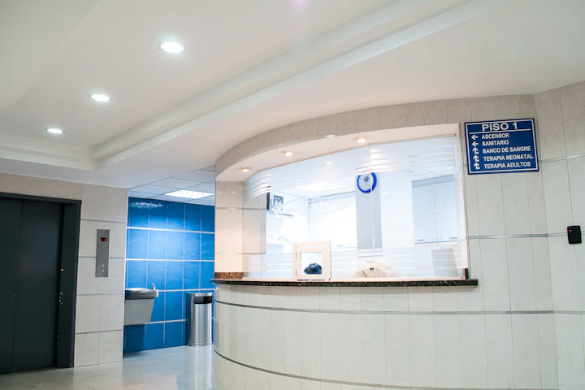
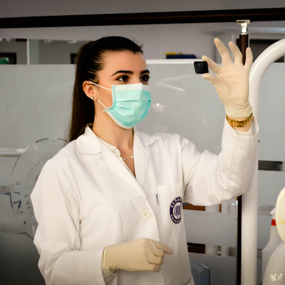
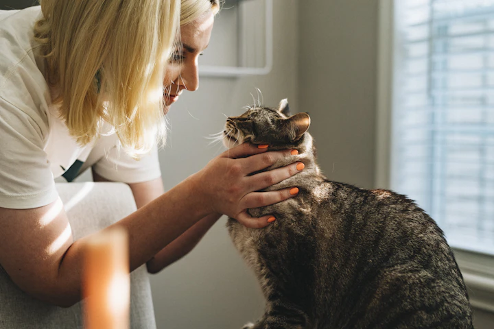
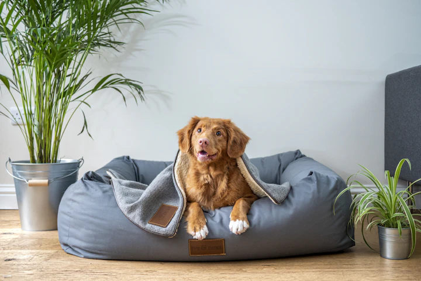

Founded on the belief that every tail wag matters.
Discover how PawCare was envisioned as a tranquil clinical sanctuary where modern evidence-based veterinary medicine and heartfelt compassion work in harmony to give pets longer, healthier lives.

Low-Stress Sanctuary
Designed for Animal Senses
14+ Years of Care
Trusted Community Practice
A modern veterinary home designed around pet senses.
Pets perceive clinical environments through scent, acoustics, and sensitive tactile vibrations. PawCare was constructed from the ground up to reduce sensory overload and transform clinical visits into reassuring routines.
From a humble vision to a trusted community cornerstone.
Over a decade of dedication to advancing veterinary standards, modern diagnostic capabilities, and deepening the human-animal bond.
Dr. Sarah Jenkins Opens PawCare
Founded as a modest two-room community clinic with a fierce commitment to gentle handling, feline-friendly appointments, and transparent medical counsel.
Comprehensive Soft-Tissue & Imaging Wing
Dr. Michael Vance joins as Surgical Lead, introducing high-definition digital radiology, dedicated surgical nursing teams, and active thermal warming systems.
Architectural Low-Stress Overhaul
Complete facility expansion featuring species-isolated reception zones, continuous calming pheromone diffusion, and specialized negative-pressure dental suites.
Point-of-Care Laboratory & Sonography
Installation of real-time ultrasonography and in-house hematology, providing pet parents with comprehensive blood chemistry and organ panels within 15 minutes.
Collaborative Pet Guardian Portals
Connecting pet families with proactive post-op callbacks, direct digital imaging records, and lifetime preventative wellness tracking.
Elevating the standard of care with transparency & heart.
Our mission is to safeguard animal health through rigorous clinical medicine, proactive prevention, and honest, empathetic communication with guardians.
A future where vet visits bring zero anxiety.
We envision a veterinary paradigm where pets enter clinics eagerly, owners feel respected and supported, and preventative veterinary medicine prevents disease before it takes root.
The Five Freedoms of Companion Animal Welfare.
Every clinical protocol, patient cage, and treatment guideline at PawCare adheres strictly to internationally recognized animal welfare standards.
1. Freedom from Thirst & Hunger
Access to fresh water and individualized nutritional care suited to physiological and metabolic requirements during clinic stays.
2. Freedom from Discomfort
Providing an appropriate thermal environment, padded orthopedic bedding, quiet recovery kennels, and non-slip exam surfaces.
3. Freedom from Pain & Disease
Proactive prevention, rapid diagnostic evaluation, and comprehensive multimodal pain management before, during, and after therapies.
4. Freedom to Express Normal Behavior
Providing sufficient space, species-appropriate environmental enrichment, hiding retreats for cats, and peaceful handling.
5. Freedom from Fear & Distress
Ensuring conditions and treatment protocols that avoid mental suffering through gentle restraint and low-stress handling certified staff.
Rooted in science, practiced with deep empathy.
We reject high-pressure medical sales or overtreatment. Our recommendations are grounded in peer-reviewed veterinary research and customized to your pet's life circumstances.
Meet our compassionate veterinary doctors.
Demonstration staff profiles highlighting clinical expertise, patient bedside manner, and gentle care techniques.
Dr. Sarah Jenkins, DVM
Specializing in feline medicine, preventative geriatrics, and certified low-stress handling techniques.
Fictional Demo ProfileDr. Michael Vance, DVM
Advanced clinical training in minimally invasive procedures, laparoscopic surgery, and complex wound reconstruction.
Fictional Demo Profile
Internal CareDr. Elena Rostova, DVM
Dedicated to solving chronic allergic dermatitis, gastrointestinal disease, and abdominal imaging diagnostics.
Fictional Demo ProfileDr. Marcus Chen, DVM
Specializing in daytime medical stabilization, multi-agent pain relief protocols, and clinical toxicology antidote management.
Fictional Demo Profile
Crafted specifically to melt away animal stress.
Every inch of our physical clinic was planned alongside veterinary behavioral specialists to eliminate the sensory triggers that induce fear.
The calm experience awaiting you and your pet.
From easy arrival to post-care check-in, here is what makes an appointment at PawCare distinct.
Seamless Check-In
Text from your car or step inside; feline patients bypass loud lobby areas directly into quiet cat suites.
Acclimation Phase
Five unhurried minutes allowed for your pet to explore exam furniture, sniff treats, and settle comfortably.
Gentle Evaluation
Exams conducted wherever your pet feels most secure: on the floor, on your lap, or curled inside their carrier.
Clear Summary
A digital breakdown of vitals, next vaccinations, and personalized wellness tips emailed to your inbox.
Medical-grade hygiene for infectious defense.
Infection control is vital in modern veterinary medicine. Our sanitation protocols adhere strictly to human hospital operating theater benchmarks.

Educating pet parents builds healthier communities.
We partner with regional animal rescue shelters, host free quarterly pet CPR workshops, and run educational webinars on kitten socialization and senior dog care.
The moral compass guiding every clinical choice.
Values that inspire our team to deliver clinical excellence, kindness, and honest care daily.
Compassion First
Every animal is treated with the gentle patience we would expect for our own beloved animal companions.
Scientific Rigor
Commitment to continuous clinical education, modern diagnostic equipment, and evidence-based medicine.
Total Transparency
Upfront fee explanations, honest prognoses, and zero hidden line items on any veterinary invoice.
Preventive Focus
Preventing suffering through early lifestyle modification, tailored nutrition, and timely immunizations.
Common Questions About Our Practice
Insight into our philosophy, staff credentials, and visiting policies.